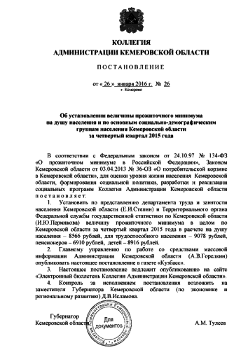

Веду учёт домашних финансов и время от времени делаю некоторые выводы.
40 тысяч рублей необходимо в месяц нашей семье из 4 человек, чтобы жить впритык.
Включены: супермаркет, детский сад, школьное питание, квартплата, бензин.
Не включены: ремонт дома или машины, покупка одежды и обуви, покупка техники или мебели, отпуск, спортзал, кредиты.
То есть, это примерно прожиточный минимум для мыдла, установленный опытным путём, но без каких бы то ни было перспектив.
Напомню, на IV квартал 2015 года прожиточный минимум в Кемеровской области установлен в размере 9078 рублей для трудоспособного населения, 8916 — для детей.
